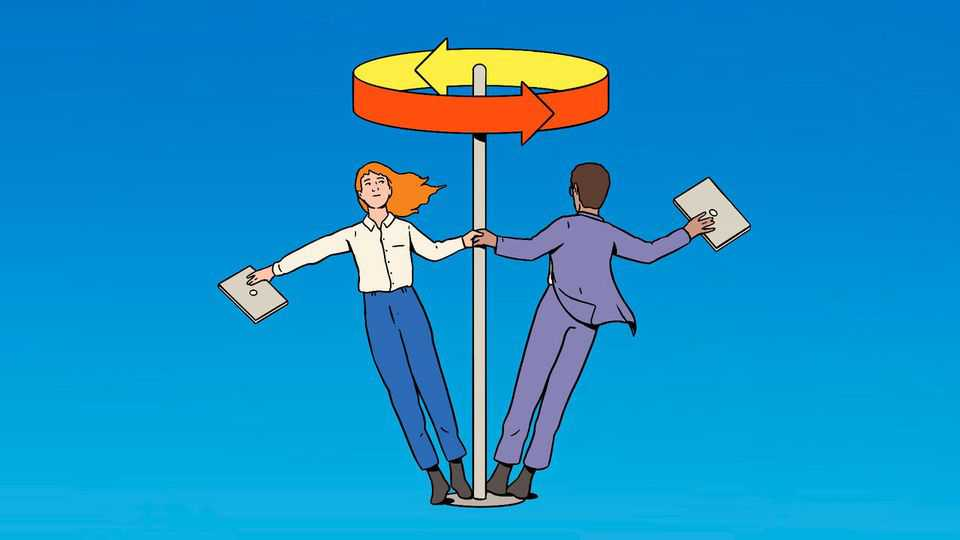

Millennials’ success deserves a toast (not the avocado sort)
How a “lost generation” found itself

Oct 15th 2026
Millennials, born between the early 1980s and mid-1990s, had a brutal coming of age. Many graduated in the wake of the global financial crisis. Youth unemployment rose above 50% in some parts of Europe, leading to talk of a “lost generation”. Living with their parents and deprived of the prospect of owning a home, they were lectured by unsympathetic elders not to spend so much money on brunch.
Today millennials, aged around 30-45, have dramatically turned their fortunes round. They earn more than any other recent generation did at the same age, and are catching up in terms of home-ownership. At the same time, millennial-era culture is enjoying a revival in television, music, gaming and even fashion, where their notoriously tight trousers are cool once again.
Some of this is simply the way of the world. As generations age, they get better jobs, earn more and buy homes. Millennials are not the first lot to reach middle age and revive the culture of their youth. The 1970s witnessed a 1950s revival, with a rock'n’roll renaissance, “Happy Days” and “Grease”. In the 1990s bell-bottoms and tie-dye emerged from the back of wardrobes. Nostalgia reliably runs on a two-decade timetable.
Yet the millennial comeback is different. True, part of it is luck. The generation’s early economic misfortune was later counterbalanced by serendipity, when the covid-19 pandemic triggered the early retirement of many older workers. The result was a senior-management vacuum—filled by millennials.
A bigger part of the story, however, is innovation and hard work. The leading lights of the tech industry, which has created enormous wealth, include many millennials. They account for more than twice the share of America’s billionaires that Gen X did at the same age. Tech’s next great leap, artificial intelligence, is likely only to strengthen their position. The bosses leading the revolution, such as Dario Amodei, Mark Zuckerberg and Sam Altman, are themselves millennials.
Tech has also boosted millennials’ cultural comeback. Online platforms encourage people to bathe in the content of their youth. YouTube and Spotify are nostalgia machines. Services like Netflix, with their vast libraries, introduce new generations to millennial hits like “The Big Bang Theory”, from 2007, which is the fifth-most streamed series in America this year. Meanwhile, social media have terrified Hollywood. Hence all those sequels and reboots—safer bets than original projects. “The Devil Wears Prada 2” is one of the world’s highest-grossing films this year.
Even those who dread the return of skinny jeans should cheer the millennial revival. The generation’s economic story shows that “lost” cohorts can find their way. Policymakers should note that millennials’ prospects improved thanks to markets and events, not the state-funded rescue that some once called for. As AI causes alarm about young people’s job opportunities, the millennial bounce offers a cautious cause for optimism.
Millennials’ cultural comeback has lessons, too. Many will look at the glut of 1990s reboots, such as a new “Baywatch” series, and feel that Hollywood’s creativity needs saving. But once more, technology is helping. The infinite breadth of online platforms means that you have plenty of alternatives if millennial favourites are not to your taste. And the vast back-catalogues stored on these platforms mean that the hits of every era are available to everyone. Twenty years ago, one generation bore the brunt of the financial crisis. Today, all generations should celebrate the millennials’ deserved rebound.■